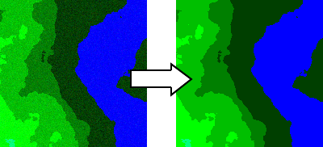
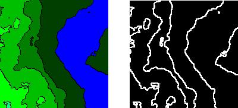
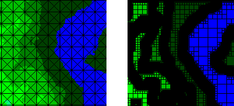
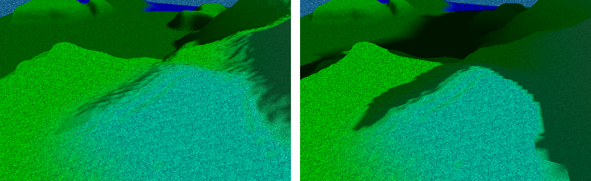
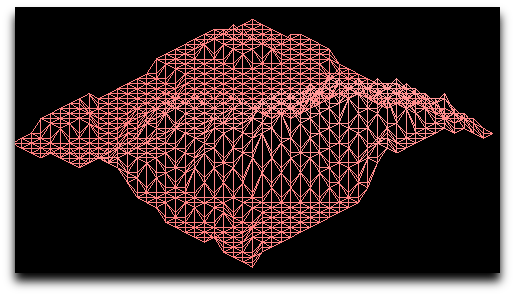
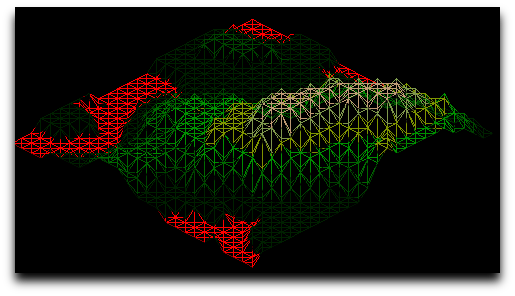
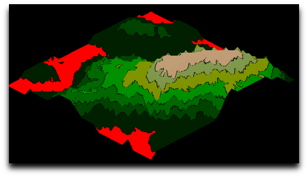

La cartographie de demain !
AutoMap a été réalisé en Objective Caml en utilisant les bibliothèques OcamlSDL, glMLite et LablGTK par l'équipe UMAD.
AutoMap est capable de transformer n'importe quelle image représentant un relief (tel que des cartes topologiques), en couleurs ou en niveaux de gris, en une représentation tridimensionnelle beaucoup plus visuelle et intuitive qu'une simple image ! Cela vous permettra de vous déplacer dans l'espace et de visualiser plus facilement le relief de votre image.
AutoMap génère un fichier Wavefront (.obj) standard compatible avec Blender entre autres ce qui vous permettra d'exporter votre modèle pour votre logiciel de modélisation 3D favori pouvant lire les fichiers Wavefront (.obj) !
Il y a plusieurs étapes avant la génération du modèle 3D :
| • Élimination du bruit |  |
| • Détection des contours |  |
| • Génération de la grille |  |
| • Précalcul des normales et des ombres |  |
Après avoir passé ces étapes, vous serez en mesure d'afficher le terrain généré via une interface utilisant OpenGL (un moteur 3D) et de vous mouvoir dans l'espace.
AutoMap gère plusieurs modes d'affichages :
| • Vue fil de fer |  |
| • Vue fil de fer texturé |  |
| • Vue solide texturée |  |
{kind=link}
{kind=link}
{kind=link}
{kind=link}
{kind=link}
{kind=link}
{kind=link}